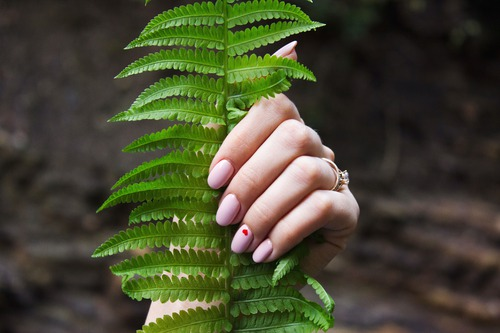
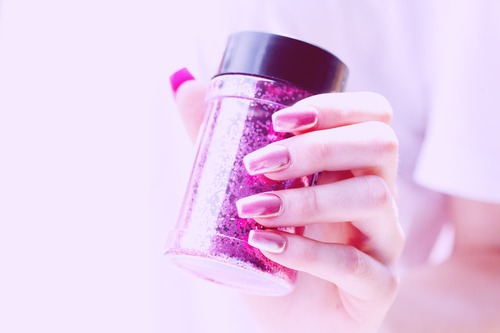

Gel Nails
Gel Polish on Hand 20 Gel Polish on Feet 25 Gel Manicure 35 Gel Pedicure 50 French tips 5 Nail Art 5+
Dip Nails (sns/next-gen)
Dip Color 45 ADDITIONS Nails extension 5 White tips 5 Removal 5 Nail Art 5+
Sculptured Nails
NEW SET Pink & White 50 Regular Pink 40 Gel Full-set 55 FILL Pink & White 40 Regular Pink 30 Gel Fill 45
Manicure
Classic Manicure 16 Paraffin Manicure 21 All Natural Herbal Manicure 26 VOESH Manicure 35 Collagen Manicure 35
Pedicure
Classic Pedicure 33 Paraffin Pedicure 40 All Natural Herbal Pedicure 45 VOESH Pedicure 55 Collagen Pedicure 45
ADD ON French Polish 5 Nail Art 5+ Acrylic take off 10 Sculpture Nail Fix (per nail) 3+ Gel take off 8 Polish Change 8/10 Polish Change (acrylic nails) 10 Paraffin 5/10 Collagen 15
Princess (ages 1-8)
Pedicure 17 Manicure 11 Gel Pedicure 32 Gel Manicure 26 Polish: Hands 7 : Feet 7
Missy (ages 9-11)
Pedicure 22 Manicure 11 Gel Pedicure 37 Gel Manicure 26 Polish: Hands 7 : Feet 8
ADD ON French/American Polish 5.00 Nail Art / Design (two thumbs or two toes) 3.00 Paraffin Treatment (Hands or Feet) 5.00
WAXING
Face
Eyebrows 10 Lip 8 Chin 10 Sideburns 10
Cheek 10 Forehead 10 Nose 8 Full Face 35
Legs
Upper 40 Lower 35 Full legs 65
Body
Chest 45+ Back 45+
Arms
Half 30 Full 35 Under 20
Bikini
Classic 35+ Brazilian 45+
What is Soak-off Gel?
Soak-off gel is very similar to traditional nail polish. Instead of being air-dried it is cured un- der a special LED lamp. Soak-off gel comes in liquid form and it can be applied directly to the natural nail bed or on artificial nails. Unlike nor- mal polish that chips in 5 days or under, Soak-off gel polish can last up to 2 weeks. It is great for protecting thin, splitting, and peeling nails.
Advantages of Gel nails - Long lasting. - Instant dry. - Odor free. - Fast application. - Acetone wraps removal.
What is Dip Nails?
It is nail colors that is applied via a dipping method instead of polishing. Colors comes in powder form and it adhere to your nail via an application adhesive coat followed by immer- sion of the nail into the color powder. The color is air dried in several minutes. No UV curing is needed. Once dried it forms a harden barrier on top of your nail bed. Thus it is great for protecting thin, brittle, peeling and split- ting nails.
Advantages of Dips nails - Long lasting. - Dries in under 5 minutes. - Odor free. - Lightweight and durable. - Acetone wraps removal. - No UV light curing. - Can be use to lengthen nails.
Classic Manicure
Basic rejuvenation treatment for your hands includes cuticle works, light massage and polish. 16Paraffin Manicure
For rough and dry hands. The paraffin treat- ment offers a moisturizing paraffin (hot wax) wrap for your hands, leaving your skin feeling silky smooth and baby soft. 21All Natural Herbal Manicure
For tired and dry hands/lower arms. A mois- turizing and cleansing mask, infused with 100% pure essential oils and natural herbs for your lower arms and hands; hot towel wrap to im- prove circulation and enhances the moisturizing andcleansingpropertyofthemask. 26VOESH Manicure (Individualized multi-steps manicure system)
For rough, tired and dry hands/lower arms. After some cuticle work, we exfoliate your skin with a scented gel scrub; follows by a scented mud mask and hot towel wrap. Finishing up with an extended massage session with a scented massage cream. 35Collagen Manicure
For extremely dehydrated and dry hands/lower arms. Gloves are infused with shea butter and collagen rich emulsion to penetrate and mois- turize the skin. 30
Classic Pedicure
Basic rejuvenation treatment for your feet in- cludes cuticle and callus work, light massage and polish. 33Paraffin Pedicure
For rough and dry feet. The paraffin treat- ment offers a moisturizing paraffin (hot wax) wrap for your feet, leaving your skin feeling silky smooth and baby soft. 40All Natural Herbal Pedicure
For tired and dry feet/lower legs. A moistur- izing and cleansing mask, infused with 100% pure essential oils and natural herbs for your lower legs and feet; hot towel wrap to improve circulation and enhances the moisturizing and cleansing property of the mask. 45VOESH Pedicure (Individualized multi-steps pedicure system)
For rough, tired and dry feet/lower legs. Starting of with a aromatic salt soak. After some cuticle and callus works, we exfoliate your skin with a scented gel scrub; follows by a scented mud mask and hot towel wrap. Finishing up with an extended massage session with a scented massage cream. 55Collagen Pedicure
For extremely dehydrated and dry feet/lower legs. Socks are infused with shea butter and collagen rich emulsion to penetrate and mois- turize the skin. 45
HERBAL SPA
Lemon Grass Helps relieve fatigue and headaches, relaxes muscle and nerves. It is also a good cleanser due to it’s antiseptic properties.
Peppermint Leaf Useful for migraines and clearing congestion. It’s anti-inflammatory properties for helps your tired feet, muscle spasms and cramping.
Rose Petals It’s antidepressant properties aids in soothing and uplifting your mind. It’s antimicrobial prop- erties will help soothes and heals skin blemishes.
Lavender Flower Helps soothe and relaxes the mind. It’s antiseptic and anti-fungal properties aids in reduce scarring and improves healing.
Rosemary Aids memory and concentration. Also an antisep- tic, astringent, and antioxidant that can relieve muscle pain; it can also encourage dry, mature skin to produce more of its own natural oils.
Green Tea Make your skin glow, heal blemishes, soothe rashes, and reduce body odor. Recommended to relieve headaches, combat depression and prevent premature aging.
Spearmint Leaf Generally calming, relaxing, uplifting. Helps reduce indigestion, intestinal cramps, fevers, nausea, and colic; good for relieving headache.
Jasmine Soothe Jasmine improves the skin's elasticity and helps fades tretchmarks and scars.
Ocean Refresh Seaweed extract helps to increase circula- tion. Peppermint gives the feet a cooling sensation.
Green-tea Detox GreenTea is used to reduce dryness to the skin. It also prevents premature aging.
Cucumber Fresh Cucumber helps mask all problem areas and also helps to soothe & soften your skin.
Tangerine Twist Tangerine contains anti-fungal and anti- septic properties, which help prevent and treat skin infections.
Vitamin Recharge Vitamin C slows the rate of free radical damage which causes skin dryness and wrinkles.
Lavender Relieve Lavender benefits in being antiseptic and anti-fungal which helps reduce scarring and speed healing.